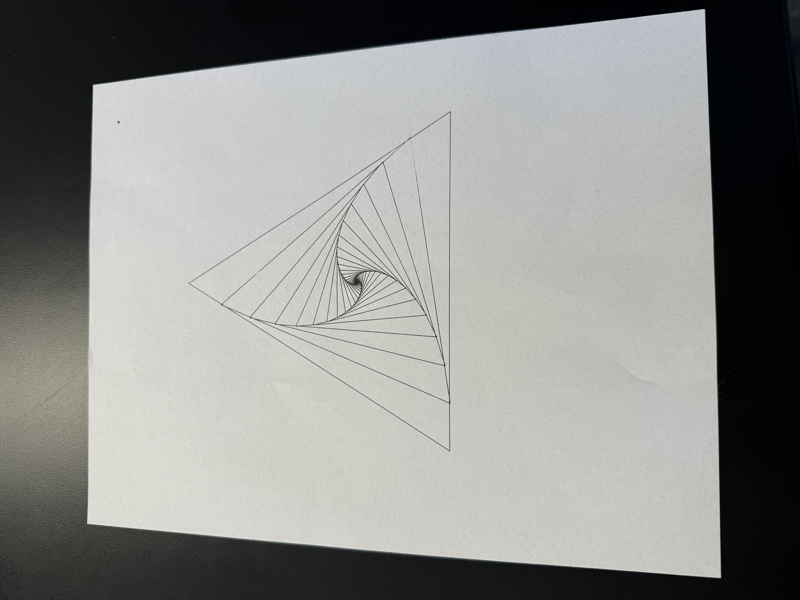
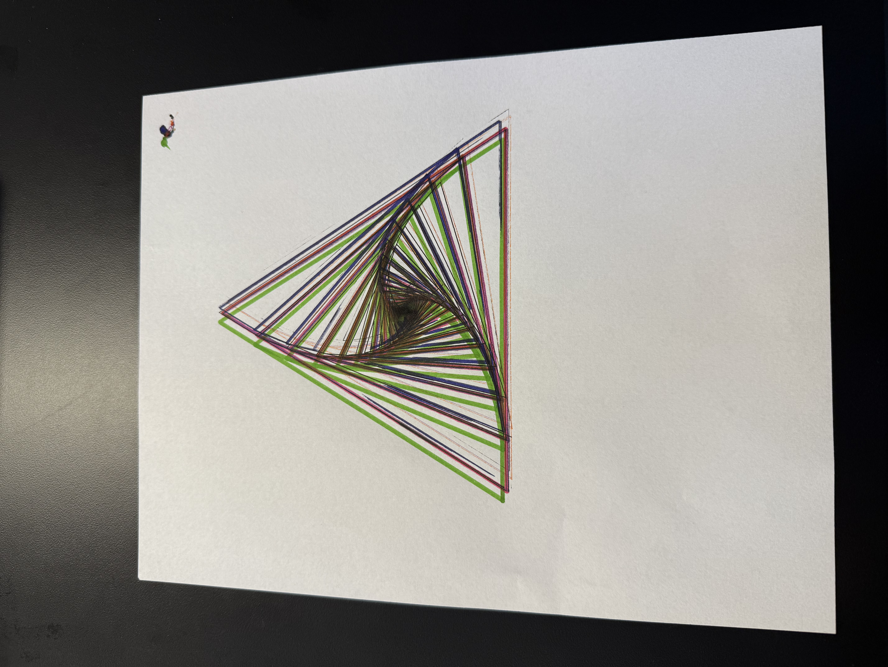
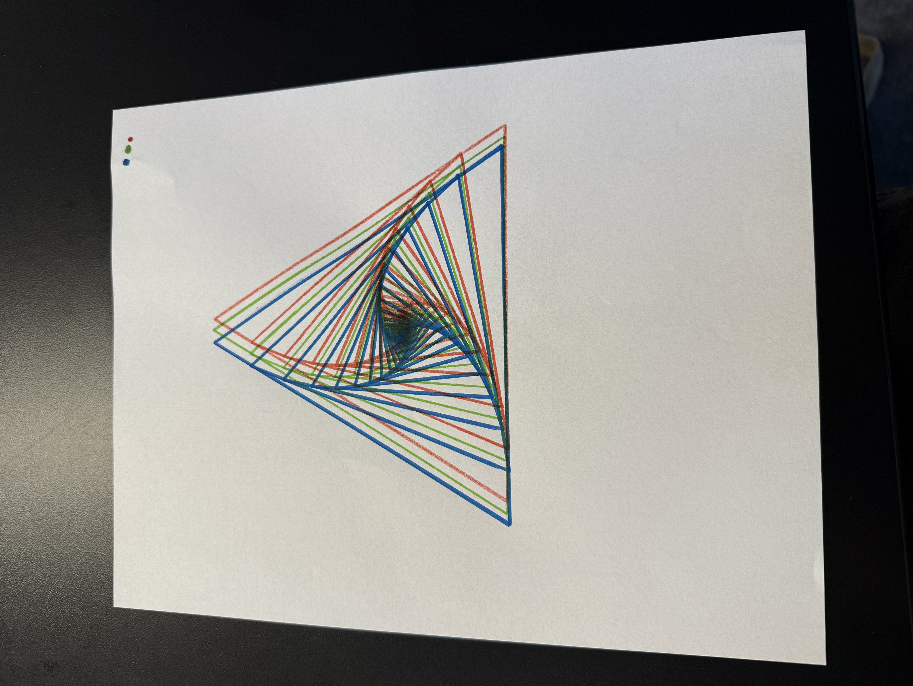
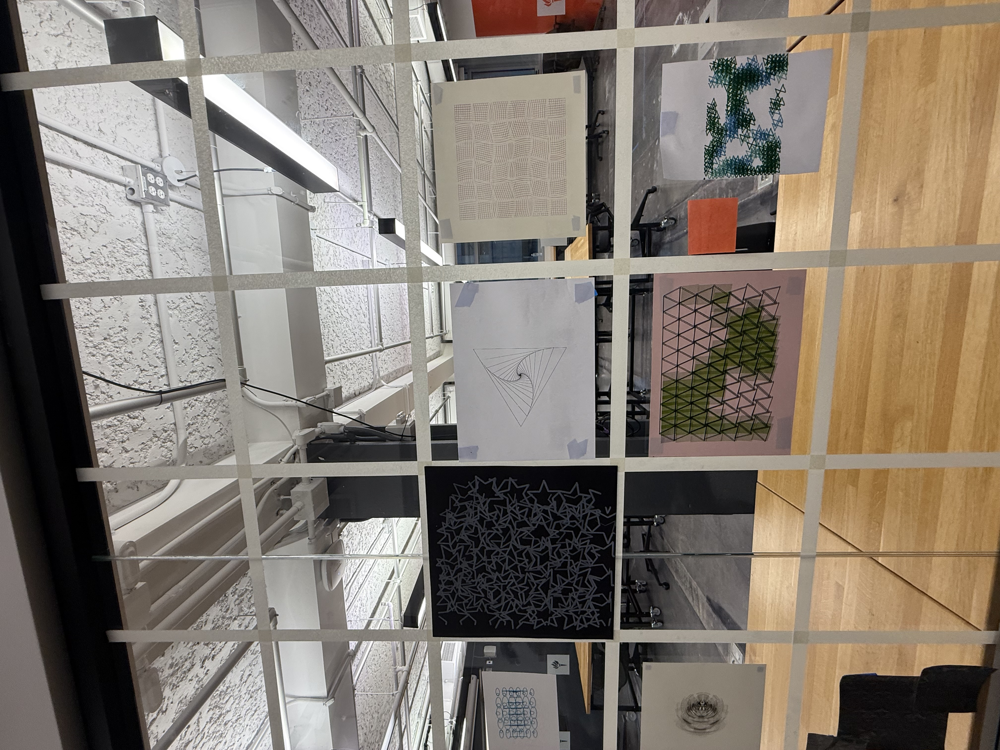
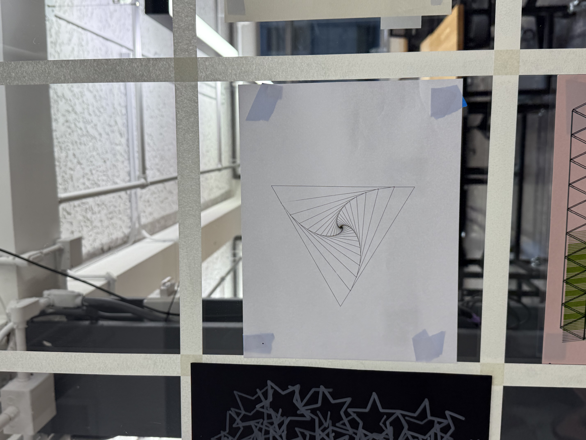

I used the last week's sketch as my basis for this week's sketch. I wanted to have mouse input interactions that would change the feel of the sketch while using the mouse or clicking on the left click. The code has two features, one is where the color way would switch on every mouse click. The other is the rotation of the triangles are altered depending on where the mouse cursor is on the screen. This feature brings out cool outputs that users can play around with, getting the output that speaks to them. The mouse X's movement affects the rotation of the triangles within the canvas, where the mouse Y affects the scale factor of the triangles.
The main iterative process is the drawing of the triangles, while making each new triangle smaller by scale than the last. This causes the triangles to stack and appear almost like an illusion where it get the triangles get deeper and deeper.
The pen plotter was a success! As I was able to map out my sketch and have it being drawn into a paper using the pen plotter. I had some troubles regarding using the pen plotter. First, I was misdirected to the production office at the IDM floor, where they had no idea what I was talking about when I requested the pen plotter. I had to scramble around and ask my classmates for some help. Finally, I did get some help using the pen plotter from my friend, where then I began to plot my sketch out using multiple different pens and markers. I tried using many different markers to get the sketch onto the paper, where some markers were not working great on the pen plotter as they needed more pressure to exert the ink. I had to apply small amounts of pressure onto the pen to get the ink out. I tried 3 different sketches, one was only using a MUJI dark blue pen, one using 3 different color markers, blue, red, and green, and one where I used all the pens and markers at my disposal. I opted to use the simple MUJI pen one as it drew my sketch elegantly, showing all the details which emphasized the feel I was going with the original sketch, which was the feeling that sketch was opening up.



Finally, I put up my sketch onto the gallery, surrounded by the beautiful pieces made by my classmates. It was lovely to see everyone's sketches and ideas, it also further encouraged me to try new things and to be ambitious, similar to what my classmates' sketches were giving in essence.

